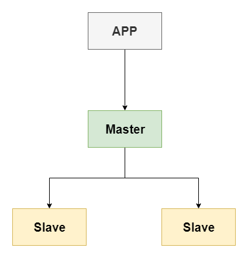

MongoDB主从部署
主从部署架构示意图
 Master-Slaver（主从）
官方声明：主从模式不推荐使用，在生产环境中，通常是分片+副本集结合使用。
1：主从选举过程耗时。
2：主从虽然实现了全量数据备份，但面对大数据MapReduce处理时，性能受限于单个机器的瓶颈。
3：分片+副本集无主节点和从节点之分，在故障发生时无需切换，各个分片节点互为备份。
4：分片+副本集在系统部署和维护上的复杂度要高于主从模式。
主从环境搭建
配置信息
- 节点1配置node-13151.conf
dbpath=/home/mongo/master-slave/node-13151/data
logpath=/home/mongo/master-slave/node-13151/log/node.log
port=13151
fork=true
replSet=replicationCluster # 在分片上，不同分片的副本集命名不能一样
- 节点2配置node-13152.conf
dbpath=/home/mongo/master-slave/node-13152/data
logpath=/home/mongo/master-slave/node-13152/log/node.log
port=13152
fork=true
replSet=replicationCluster # 在分片上，不同分片的副本集命名不能一样
- 节点3配置node-13153.conf
dbpath=/home/mongo/master-slave/node-13153/data
logpath=/home/mongo/master-slave/node-13153/log/node.log
port=13153
fork=true
replSet=replicationCluster # 在分片上，不同分片的副本集命名不能一样
启动
分别启动三个节点并进入其中一个节点
mongod -f /home/mongo/master-slave/node-13151.conf
mongod -f /home/mongo/master-slave/node-13152.conf
mongod -f /home/mongo/master-slave/node-13153.conf
主从复制配置管理
查看复制集群的帮助文档
rs.help() rs.status()添加配置
var cfg ={"_id":"replicationCluster","members":[{"_id":0,"host":"127.0.0.1:13151"},{"_id":0,"host":"127.0.0.1:13152"},{"_id":0,"host":"127.0.0.1:13153"}]} rs.initiate(cfg) rs.status()
默认从节点不能读数据。需在从节点上执行
rs.slaveOk()
变更节点示例：
插入新的复制节点
rs.add("127.0.0.1:13154")
删除slave 节点
rs.remove("127.0.0.1:27019")
查看节点状态
rs.status()
主从复制部署完毕，进入主节点即可插入数据;进入从节点即可查看数据,从节点无法插入数据。
主从复制
- 主从之间使用oplog进行数据复制同步，同步过程自动发生
- 配置arbiterOnly不会复制数据，仅作为选举裁判，不能把就有的节点变成arbiterOnly。
复制集选举原理
- 节点使用属性值property大小来决定选举谁做为主节点。
- 配置property越大越可能成为master。
- 集群当中如果主节点挂掉后，会自动在从节点中选举一个重新做为主节点。
- 设置arbiterOnly 为true 表示 做为裁判节点用于执行选举操作，该配置下的节点 永远不会被选举为主节点和从节点。
重新配置节点
var cfg ={"_id":"replicationCluster","members":[{"_id":0,"host":"127.0.0.1:13151","priority":10},{"_id":0,"host":"127.0.0.1:13152","priority":5},{"_id":0,"host":"127.0.0.1:13153","arbiterOnly":true}]}
rs.reconfig(cfg)
rs.status()
节点说明
- PRIMARY 节点： 可以查询和新增数据
- SECONDARY 节点：只能查询 不能新增 基于priority 权重可以被选为主节点
- ARBITER 节点： 不能查询数据 和新增数据 ，不能变成主节点